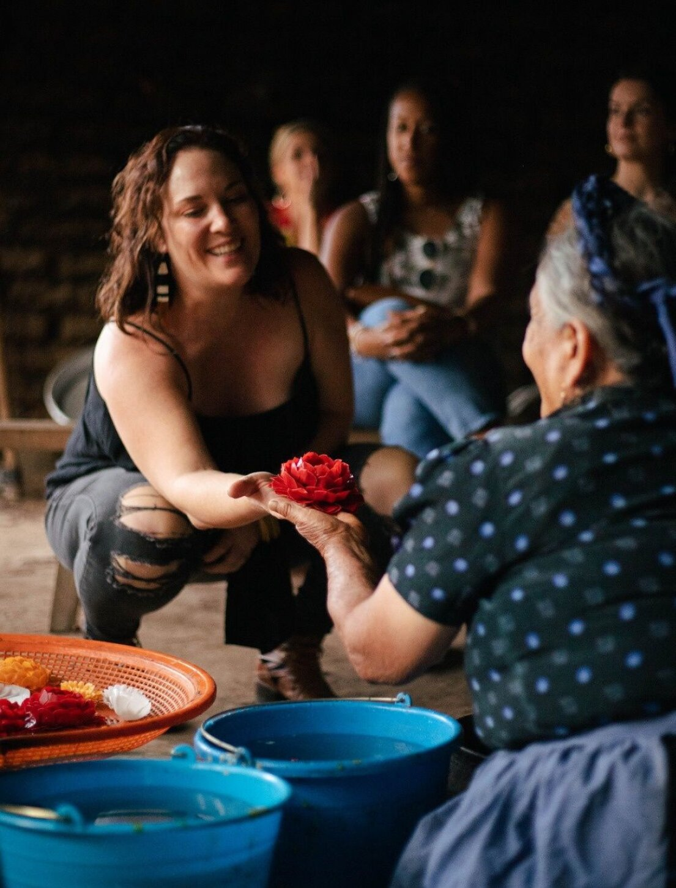

Contact
Talk to us before you book
Most of our guests have one or two questions before they join a retreat. The quickest way to an answer is a message or a short call with our team.

Christina and the team
We answer every message ourselves.
WhatsApp us
Send a message from your phone and keep the conversation there.
Open WhatsAppNumber from the live footer; [confirm it takes WhatsApp]
Book a short call
Fifteen minutes to talk through dates, rooms and which retreat suits you.
Pick a time[needs a booking link, e.g. Calendly]
Trade-off: the warmest option and the closest to how Christina already sells (the live FAQ invites people to set up a call). It needs two things we do not have yet, a confirmed WhatsApp line and a booking calendar, and it puts load on the team's time. Teachers and groups would be handled in the conversation rather than routed.